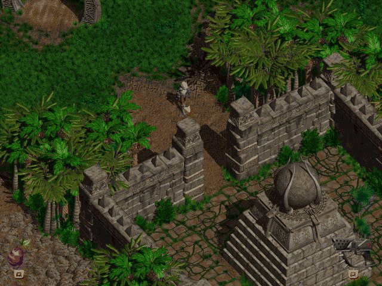
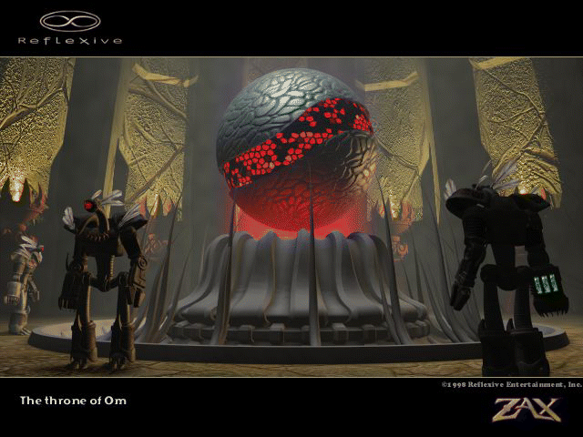
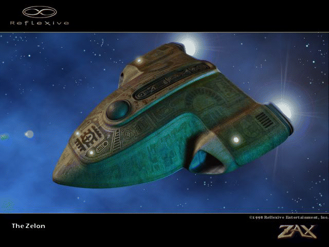

Archive
Early pictures of the game from a 1998 magazine cover CD, followed by the original websites, restored from copies at the Internet Archive. The websites are shown as they were – with frames, period HTML and, where noted, Flash. Only archived material is shown: images that were never preserved are marked as missing.
Finds from the Score cover CD – 1998
Ten pictures from the cover CD of the Czech games magazine Score, issue 59 (November 1998) – almost three years before the release. They are the large pictures of the developer's first Zax page on reflexive.net (December 1998): seven illustrations and three early screenshots. The Internet Archive kept that page, but not these pictures. On the disc they are stored in the NGF image format, which the CD also uses for its other pictures; here they are converted to PNG without loss, in their original size of 640×480.









The text that came with the pictures:
Velmi nadějně vyhlížející sci-fi adventuru ZAX prezentovali na Internetu před nedávnem marketingoví odborníci firmy Reflexive Entertainment. Její vydání je sice naplánované až na konec příštího roku,při spatření těch úchvatných renderovaných - a přece tak reálných - obrázků ze hry mi všk srdce napovídá, že tady by se mohl skrývat jeden z nejpotencionálnějších produktů příští zimy. Když budeme všichni společně věřit a doufat, třeba se ZAX dostane na herní trh dříve a my tak budeme moci konečně odložit slintátko, uchopit myš a dát se do hraní. Už aby to bylo.
In English: “The very promising-looking sci-fi adventure ZAX was recently presented on the Internet by the marketing experts of Reflexive Entertainment. Its release is planned for the end of next year, but seeing these stunning rendered – and yet so realistic – pictures from the game, my heart tells me this could be one of the most promising products of next winter. If we all believe and hope together, maybe ZAX will reach the shops sooner, and we can finally put away the bib, grab the mouse and start playing. Can't wait.”
Websites
reflexive.net/Zax – December 1998

The first Zax page of the developer: “Zax, Coming 1999-2000”, with the early story of a soldier of the Galactic Imperium. Only the text was preserved; its ten large pictures – seven illustrations and three screenshots – are the ones found on the Score cover CD, the other images are marked as missing.
reflexive.net/Zax – January 2001

The developer's site during production. Most of the layout graphics were not preserved; missing images are marked.
reflexive.net/Zax – April 2001

The stone medallion design with Zax and the rune chain. Some frame graphics were not preserved; missing images are marked.
reflexive.net/Zax – December 2001

The release version with FAQ, demo page and the mirrored navigation.
reflexive.net – 2002 to 2003

The short Zax page on the developer's site after the release, with FAQ, characters, weapons, demo and the French patch. Of its screenshot gallery seven full-size pictures were preserved.
Screenshot pages (their overview page was not preserved): 00, 01, 02, 04, 05, 06, 07, 08, 09, 10, 11, 12, 13, 14, 15, 16, 17, 18, 19, 20, 21, 22, 23, 24, 25, MP01, MP02, MP03, MP04, MP05, MP06, MP07, MP08, MP09.
zax-game.com – 2002 to 2004

The official JoWooD site in English and German. Navigation and banner are the original Flash files, played with the Ruffle emulator. Files that were never archived on zax-game.com come from JoWooD's mirror zax.jowood.com.
Pages that were reached through Flash menus that were not preserved: features, Features (German), heroes, enemies, weapons, screenshots, links. All heroes, enemies and weapons are linked from The Game.
jowood.com – January 2003

The game's pages on the publisher's site in English and German: the game, screenshots, demo, patches, reviews, system requirements and registration. Links to other JoWooD pages lead to the Internet Archive; the Zax logo was not preserved, the forms are disabled. Screenshots never archived at their own address come from the files of the same name elsewhere on jowood.com.